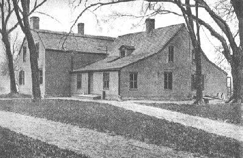

by
Stefan Bielinski
Margarita Schuyler was born in January 1701. She was the second youngest daughter of Johannes Schuyler and the widow Elsie Staats Wendell Schuyler.
She was raised by a mother who was in her fifties and grew up in the Schuyler house in Albany and at the family farm where she enjoyed the company of a large extended family. In December 1720, she married her cousin Phillipus Schuyler at the Albany Dutch church. Her husband was the son of her father's brother! Unlike most early Albany unions, the marriage was childless.
 Although she had inherited an Albany house from the estate of her father, her home was on the family farm located north of Albany known as the Flats. The couple improved the property and it became a country retreat for family members and a hospitable accommodation for visitors from all over the colonies. General Philip Schuyler was one of many Schuyler nephews and nieces (and their children as well) who spent considerable time at the Flats and who were nurtured by "Aunt" Schuyler.
Her husband filed a will in 1748 naming her to be a major benefactor of his large estate as long as she remained a widow. Colonel Phillipus Schuyler died in February 1758. By that time, fifty-seven-year-old Margarita had become known as "Madame Schuyler" and was renowned as a hostess and matriarchal figure in Albany social circles. Her life is the subject of Anne Mc Vickar Grant's detailed but nostalgic Memoirs of an American Lady.
Into her eighties, Margarita Schuyler Schuyler filed a will in February 1782. She died at the Flats on August 28 at the age of eighty-one and was buried in the family plot. Her will passed probate early in 1783.
notes
See "The
Aunt Schuyler House" for a fascinating and intimate mid-nineteenth-century
portrait of Madame Schuyler and her home. Additionally, her life has been
memorialized in a number prominent works
of historical fiction. Sources: The life of Margarita Schuyler
Schuyler is CAP biography number 1488. This
profile is derived chiefly from family
and community-based resources. We seek to connect
this exceptional country woman more directly to the life of the city!
Sources: The life of Margarita Schuyler
Schuyler is CAP biography number 1488. This
profile is derived chiefly from family
and community-based resources. We seek to connect
this exceptional country woman more directly to the life of the city!
first posted 12/15/03; last updated 2/18/18